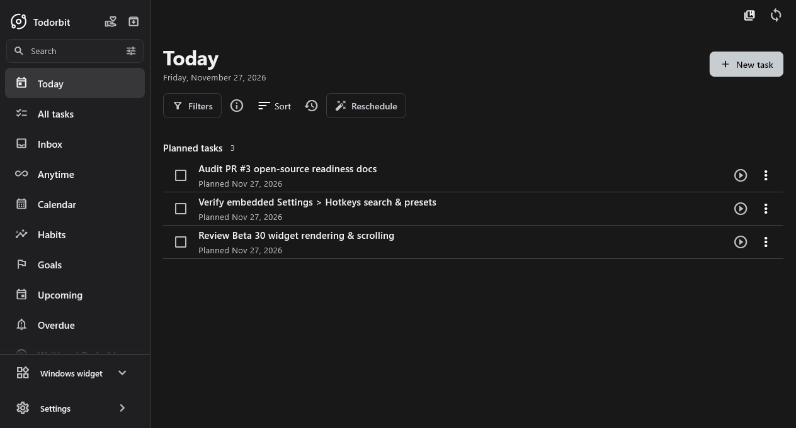
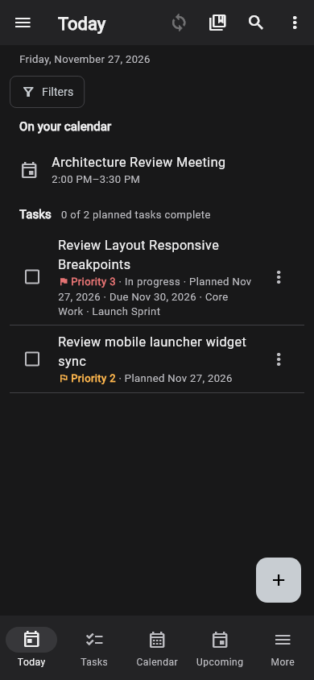

Give every task a place.
Categories, two-level projects, subtasks, named checklist groups, task dependencies, templates, recurring series with progressive step plans, Quick Search, and saved views.
Your day, in your orbit.
Tasks, interactive calendars, habits, goals, focus timers, and native widgets. Local-first on Windows and Android, with zero telemetry.
Download Beta 30Free & open source (MIT) · Windows x64 & Android 8.0+


A place for the whole picture
Keep a deadline separate from a planned day. See fixed events alongside tasks. Record what you actually worked on.
Categories, two-level projects, subtasks, named checklist groups, task dependencies, templates, recurring series with progressive step plans, Quick Search, and saved views.
Day, Week, and Month time-grids on Windows with cursor-anchored zoom and drag-resize, plus touch agendas on Android. Preview deterministic Smart Reschedule plans before applying.
Track habits and quantitative milestones, run Stopwatch, Countdown, or Pomodoro focus timers, attach files offline or via Android's Shared Inbox, and inspect local reports.
Independent Explorer-hosted Windows Tasks & Calendar widgets and Android launcher widgets keep your day in sight. Customize palettes, surface transparency, and keyboard shortcuts.
Your plans are personal
Todorbit works offline without accounts or analytics. Your planner lives in a local SQLite database with forward-only schema migrations, local snapshots, reviewed restore flows, and an optional privacy PIN.
Read the privacy policyReviewed database replacement automatically preserves a Before Restore snapshot. Export verified SQLite backups before moving portable builds or upgrading.
Export or selectively import supported personalization—including themes, hotkey presets, navigation order, and widget layouts—without touching database records or credentials.
A calmer place to start
v1.0.19-beta.30 release notes · Experimental pre-release · MIT license
Keep a verified local backup before upgrading. Compare the published SHA-256 checksum for the exact installer, ZIP, or APK you download.
Windows 11 is the primary test platform. Windows 10 acceptance is limited; packages are unsigned.
Extract the full portable ZIP together (`Todorbit.exe`, `TodorbitWidget.exe`, DLLs, `data/`). Moving a portable folder selects a separate profile.
Windows SHA-256 checksumsProduction-signed prerelease APK for ARM64 and x86-64 devices (API 26+).
Upgrades require a build signed with the same publisher key. GitHub builds verify AOSP signatures natively before launching Android's installer.
Android SHA-256 checksumsMade in the open
Todorbit is created by Hussam Alkhatib and open to contributors. Explore the 4-layer architecture, run the TDAT (`.\dev`) test harness, check starter tasks, or open a pull request.
Keep private databases, credentials and backup passphrases out of public issues. Report security concerns by email.